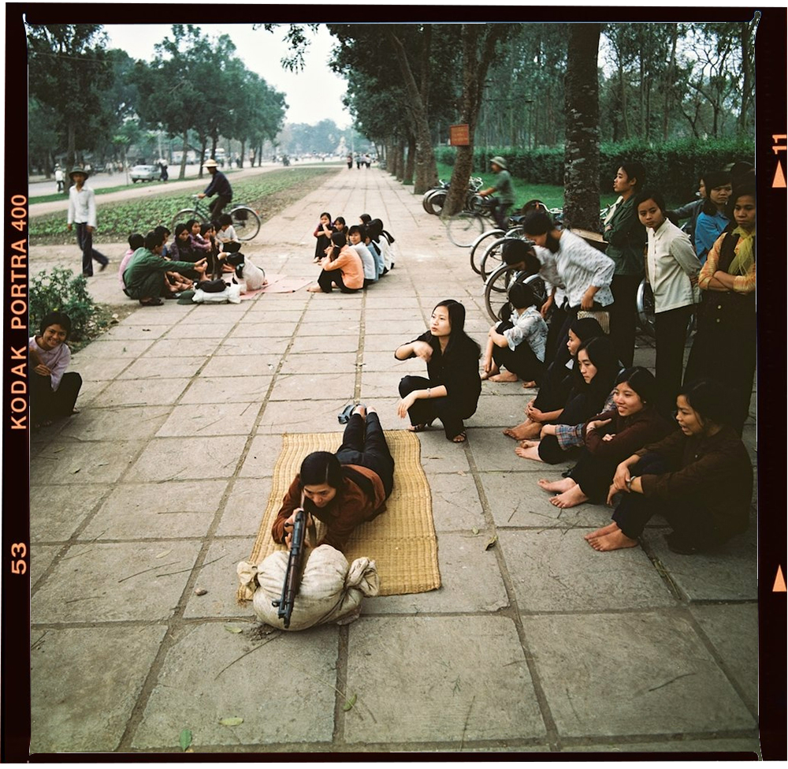

là một nhiếp ảnh gia nổi tiếng người Đức. Ông được biết tới với những bức ảnh chân thực và giàu cảm xúc nhưng vẫn đậm chất thời sự tại nhiều điểm nóng của thế giới, trong đó có Việt Nam giai đoạn chiến tranh. Ảnh của ông được đăng tải trên nhiều tờ báo lớn và được triển lãm khắp thế giới.
Nhân kỷ niệm 40 năm chiến tranh bảo vệ biên giới phía Bắc (1979 - 2019), Trí thức trẻ đã có cuộc trao đổi với Thomas Billhardt và được ông chia sẻ về hành trình tác nghiệp tại Lạng Sơn, một trong những khu vực cuộc chiến diễn ra ác liệt nhất vào năm 1979.
Trong khoảng thời gian từ năm 1967 tới năm 1975, tôi đã tới Việt Nam 7 lần với tư cách là một phóng viên chiến trường. Tôi là một trong những nhiếp ảnh gia đầu tiên tới thành phố Đà Nẵng sau giải phóng vào tháng 5/1975 và từ Hà Nội đi Sài Gòn trong tháng 9 năm đó.
Năm 1979, khi hay tin về cuộc chiến tranh giữa Việt Nam và Trung Quốc, Đoàn thanh thiếu niên tự do Đức (FDJ) ở CHDC Đức (Đông Đức cũ), đã lập tức cử tôi sang Việt Nam. Tôi là phóng viên duy nhất của CHDC Đức đưa tin về cuộc chiến này ở khu vực Lạng Sơn.
Trung Quốc đã rút đi nhưng trên đường chôn rất nhiều mìn. Tôi chỉ được phép đi phía sau những người lính Việt Nam trên những con đường đã được rà phá.
Tôi ngủ nghỉ trong những ngôi nhà đổ nát cùng với những người lính và cũng nhận được thức ăn từ họ. Những người lính rất quan tâm lo lắng để không có chuyện gì xảy ra với tôi. Lúc nào cũng có tiếng súng nổ rền vang. Thật tiếc, tôi đã không được phép ra tiền tuyến.
Tôi đã tự tìm cách thuyết phục người phiên dịch và nhân viên an ninh về phong cách nhiếp ảnh mang tính nhân văn của mình. Những bức ảnh của tôi là để lên án chiến tranh và kêu gọi thế giới thể hiện tình đoàn kết hữu nghị với các nạn nhân của cuộc chiến.
Tôi đã nói với bạn mình rằng các bức ảnh chân thực về cuộc chiến phi nghĩa của Mỹ thuyết phục hơn là những bức ảnh mang tính tuyên truyền. Các bức ảnh của tôi thể hiện sự kính trọng và tình yêu của tôi dành cho những con người Việt Nam chiến đấu vì nền độc lập. Tôi không muốn chụp những bức ảnh độc lạ về những con người ở một miền đất xa xôi, mà muốn mang mọi dân tộc, chủng tộc đến gần nhau hơn. Chúng ta là những người anh em, chị em có chung những cảm xúc. Cuộc sống, cái chết, tình yêu và nỗi đau luôn song hành dù là ở châu Á, châu u, Mỹ hay châu Phi.
Tôi luôn chụp ảnh màu. Vì chỉ có nguồn phim của CHDC Đức mà nguồn phim đó lại không được tốt lắm, nên để cho ra những tấm ảnh với chất lượng có thể chấp nhận được, tôi chỉ có thể sử dụng phim cuộn. Thế nên, tôi chọn ảnh khổ vuông. Dĩ nhiên là ảnh khổ nhỏ (135mm) tốt hơn cho ảnh thời sự nhưng nếu sử dụng khổ nhỏ, tôi chắc chắn sẽ không có kết quả ưng ý.
Tôi muốn bức ảnh phải lột tả được sự nghiêm túc và chủ nghĩa anh hùng. Tôi leo lên một chiếc bàn và muốn hướng những người lính nhìn vào ống kính, để chụp một bức ảnh tập thể nhưng vẫn thể hiện được từng cá thể. Ngay lúc đó, một nhà báo Liên Xô (cũ) cũng nhảy lên bàn cùng tôi, rồi đề nghị những người lính hãy giơ cao khẩu súng AK của họ lên và hô vang. Bức ảnh sau đó đã được chọn làm bìa cho cuốn sách ảnh về Việt Nam 1979.
Vì thế, cách họ tác chiến, cũng như phương tiện kỹ thuật nguyên sơ và tàn ác.
Tình hữu nghị với Việt Nam là mục tiêu đầu tiên của tôi khi tìm cách thuyết phục dư luận quốc tế rằng chiến thắng trước sự xâm lược của Mỹ là điều cần thiết với Việt Nam. Dĩ nhiên tôi cũng biết rõ là đối với Việt Nam, một cuộc chiến tranh nữa với một đất nước lớn hơn rất nhiều có thể là đòn chí tử. Mỹ đã rất vui mừng về chuyện đó.
Trong giai đoạn đó, người dân đang ăn mừng chiến thắng chống Mỹ ở Hà Nội. Người dân Việt Nam xứng đáng được vui mừng vì điều đó. Bức ảnh những quân nhân với gương mặt cười ở Hà Nội và bức ảnh người lính cài hoa trên súng khi hành quân ở Lạng Sơn những bức ảnh tôi thích nhất trong số những ảnh tôi đã chụp tại Việt Nam năm 1979.